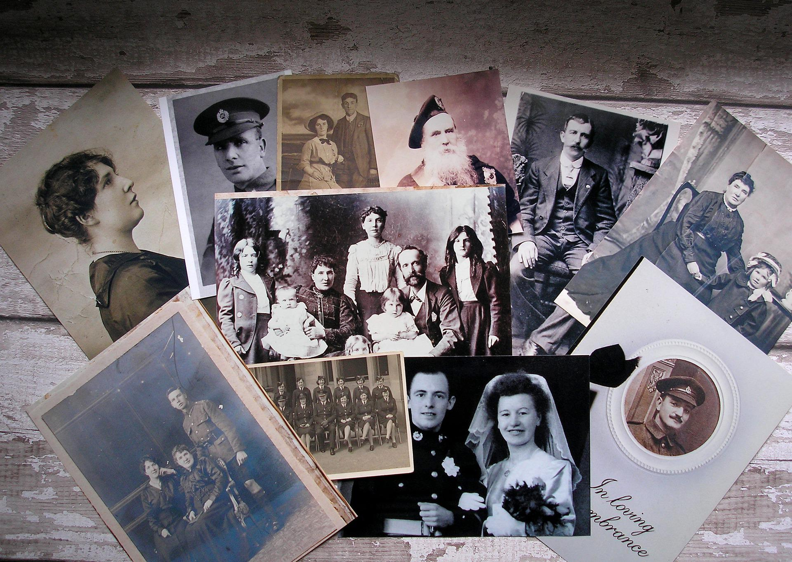

Ustawienia rodowe
Podróżuj do przeszłości swoich przodków, aby stworzyć swoją przyszłość, korzystając z nowo odkrytej pełnej mocy.
Holistyczne ustawienie rodu oznacza akceptację rodziny z której pochodzisz i a także twojej terazniejszej /wybranej rodziny w stanie głębokiego relaksu. Za Twoim pośrednictwem poszczególni członkowie rodziny opowiadają swoją prawdziwą historię, która chce być zobaczona i doceniona. Holistyczny sposób pracy ma uzdrawiający wpływ na system rodzinny, ponieważ prawda oznacza uzdrowienie.
W ten sposób dobra i energetyczna moc przodków może ponownie do ciebie przepłynąć. Oznacza to, że masz za sobą pełną władzę rodzinną i jesteś wolny od ról zastępczych. Początki stresujących problemów życiowych mogą zostać wyraźnie ujawnione i można znaleźć wybawienie.
Moje osobiste doświadczenia z holistycznym uzdrawianiem przodków:
Ustawienia rodzinne zawsze mnie fascynowały. Bazując na swoim wieloletnim doświadczeniu w dziedzinie ustawien rodzinnych mogę powiedzieć:
Często możliwe było pomyślne rozwiązanie tematów i wątpliwości przedstawionych na listach tematów, ale w pewnym momencie wydawało mi się to „niekończącą się historią”. Stawałam się coraz bardziej sfrustrowana, ponieważ prawie zawsze było to tylko „selektywne” leczenie blokad.
Brakowało mi holistycznego podejścia do rozwiązań i trwałej integracji sił całej rodziny.
Szukałem więc holistycznej konfiguracji systemu, aby klient uzyskał całościowy i trwały efekt „wow” w swoim rozwoju osobistym.
Znalazłam to, czego szukałam i najpierw poddałam się osobiscie tego holistycznego ustawienia przodków.
Ta praca ujawniła wiele starych, poruszających wydarzeń.
Splątania można dostrzec i rozwiązać zarówno po stronie matki, jak i ojca.
Przepływ mocy miłości, wsparcia i bezpieczeństwa może zostać przerwany przez wojny, przedwczesną śmierć lub inne zrządzenie losu. Połączenia te zostały ponownie połączone poprzez te ustawienia, gdzie wprowadzono przepływ miłosnej mocy.
Dla mnie, jako „potomek”, było to niesamowicie wyzwalające uczucie, zarówno fizyczne, jak i psychiczne.
Rozwinełam nowe zrozumienie i współczucie dla moich przodków. Ta praca z przodkami osiągnęła to, o czym nigdy nie odważyłbym się marzyć.
Kierując się tym wspaniałym uczuciem i tym pozytywnym rezultatem, skonczylam 2 szkoly, aby stać się holistycznym konstelatorem ustawien rodow. Moim życzeniem jest, aby inni ludzie również byli zachęcani do odnalezienia swojej siły i skupienia poprzez poczucie płynącej mocy przodków.
W moich holistycznych ustawieniach rodowych wielokrotnie zauważam uwikłania karmiczne.
Nieświadome starsze problemy, które nie zostały jeszcze „przetworzone”, są podczas mojej pracy są także rozpoznawane, doceniane i rozwiązywane.
Holistyczne ustawienia rodu mają nie tylko głęboki wpływ, ale mogą również zapewnić szybkie i pozytywne możliwości zmian, dzięki którym ciało, umysł i dusza znajdą się w harmonii.
Odważ się się ze mną skontaktować, czekam na wiadomość od Ciebie